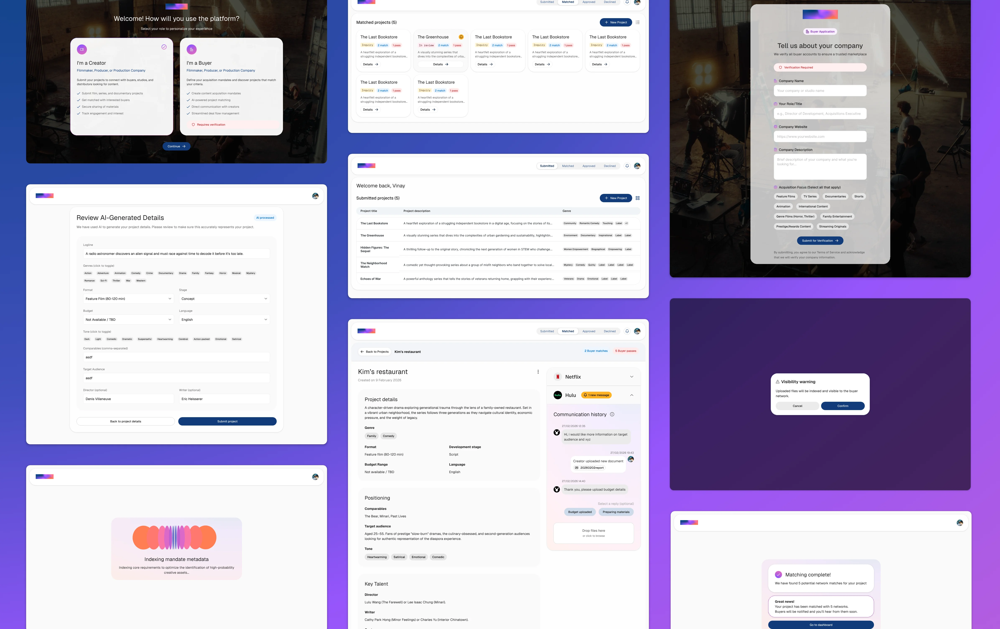

Democratising the Film & TV Industry
An AI-powered platform that lets creators around the world take their projects directly to major film and TV networks, without relying on traditional intermediaries. I helped the founder strengthen the proposition behind her fundraising, set up an AI-first design process she can run on her own, and move the product from proof of concept to MVP.

Three contributions, one integrated approach
Strategic design & fundraising
I helped the founder strengthen the product proposition, aligning product, brand and investor materials around a coherent vision for the platform.
I worked with her to clarify the positioning, shape the brand and communicate the product’s potential. This work also supported her fundraising efforts, contributing to a successful round with a business angel.
AI-first design process
I established an AI-first design process and stack, giving the founder a practical framework to:
- Define user journeys for each feature.
- Translate requirements into clear experiences.
- Evaluate journeys and identify improvements.
- Apply design thinking to future product decisions.
From POC to MVP
I used AI-assisted development to code the product and take it from proof of concept to a working MVP.
Rather than stopping at prototypes or design specifications, I translated the product vision and user journeys into a functional platform, accelerating the journey from concept to implementation.
The result was a working MVP delivered within the four-week engagement.
Where AI changed the work
- Product auditI used Playwright to run an AI agent through defined Creator and Buyer tasks, identifying friction step by step. I reviewed the same journeys manually.AI-assisted
- Proposition & brandInterviews and brand strategy workshops with the founder shaped the product positioning, brand personality and visual identity, supported by Claude for research and synthesis.Human-led
- Design process & stackI established an AI-first design process combining Claude, Figma and n8n, giving the founder a framework to define, build and evaluate product journeys independently.AI-first
- Journey design & evaluationClaude helped translate product requirements into user journeys and interactions, while Playwright supported end-to-end journey evaluation.AI-first
- POC to MVPI used Cursor and Lovable for AI-assisted development to code the product, taking it from proof of concept to a working MVP.AI-assisted
The gap between the technology and the product
The client approached me at seed stage with an initial MVP and the ambition to prove product-market fit. The product connected two sides of the film and TV industry: Creators, who submit projects, and Buyers, who represent networks looking for specific types of content.
My assessment showed that the challenge went well beyond a visual redesign. The MVP had gaps across both sides of the experience, from how creators submitted and protected their work to how buyers reviewed and matched projects. There were also operational and business risks behind the interface: manual processes, noisy matches, unclear project statuses, limited IP protection and transactions happening outside the platform.
Reframing the problem
I reframed the work around making the product viable as a two-sided platform: improving the experience for both users, reducing operational friction and creating a stronger foundation for proving the business model.
Auditing the MVP
- Prioritised pain points and risks
- Unhappy paths and edge cases
- Product risks & opportunities
I gave the agent defined tasks and asked it to navigate the product independently, flagging friction, unclear states, dead ends and unexpected behaviour.
- Task-level usability findings
- Friction points and broken flows
- Patterns to investigate further
Task: Buyer reviews a matched project
Login → Buyer dashboard → Review matches → Open project → Review match → Explore project → Contact Creator
- ✓Matches are easy to locate
- !Match score is prominent, but its meaning is unclear
- !Buyer needs to move between the project summary and mandate to understand the match
- !Supporting evidence is not clearly linked to individual criteria
- !A 72% match suggests relevance, but does not explain what drove the score
- !No clear indication of missing or conflicting criteria
AI helped me cover the surface quickly, while focused manual research helped me understand what was underneath it. The analysis revealed gaps across the product: fragmented journeys, unclear matching, inconsistent design and communication risks.
Fixing the foundations
Much of the MVP had been generated by AI tools, and it showed: inconsistent screens, contradictory states and nothing a network executive would trust with a slate decision. I restructured the experience around the Creator and Buyer journeys, replaced the fragmented screens with a unified design system and redesigned matching around three principles.
Show why
Every match connects mandate criteria to supporting evidence, so users can understand and verify the result.
Be honest about confidence
Clear indicators distinguish strong matches from borderline ones, showing users where to look more closely.
Keep people in control
Users can challenge or reject a match. AI supports the decision; people remain accountable for it.
Building a credible brand
The redesign went beyond the interface. Through interviews and brand strategy workshops with the client, I helped define the brand’s positioning, personality and visual direction. I translated this into a bespoke identity, including the logo, typography, colour palette and brand guidelines, bringing a more distinctive and human feel to the platform and its communications.
I reviewed each step with the founder, keeping product, brand and investor materials aligned. The result gave the company a stronger foundation for conversations with investors and enterprise stakeholders.
A working MVP in four weeks
In four weeks, the founder went from a fragmented proof of concept to a working MVP, backed by a stronger product proposition that supported her successful fundraising round with a business angel. She also came away with an AI-first design process and stack to keep developing the product from a design-led perspective.